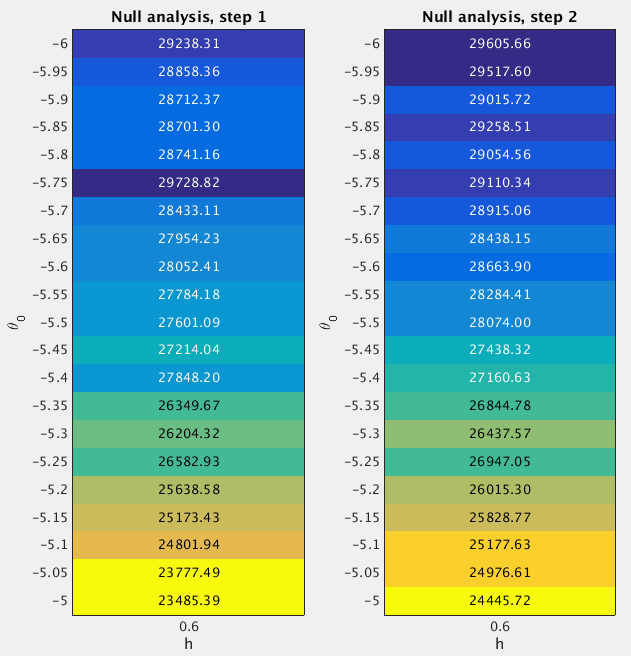

28.2 GSEA Round 2
Last updated: 2017-01-04
Code version: 89f841cd677bbeb17ff263ca62b9ca90fe392c1a
28.2.1 Fit the null model
From the Round 1 null analysis (Section 28.1), I found that almost 100% posterior mass is concentrated on the setting (h=0.6, theta0=-5.25). In Round 2, I used a finer grid. Specifically, I used the grids theta0=(-6:0.05:-5)' and h=0.6 when fitting the null model. I estimated the (unnormalized) log importance weights (“pseudo-likelihoods”) for all 52 sets of (h,theta0) under null.

After normalizing the log “pseudo-likelihoods” (logw.step*) to posterior probabilities (posp.step*), we can see that almost 100% posterior mass is concentrated on the settings h=0.6 and theta0=(-6:0.05:-5.75)'.
theta0.index <- as.character(null.df$theta0) %in% as.character(seq(-6,-5.75,by=0.05))
sum(null.df$posp.step2[theta0.index]) ## [1] 128.2.2 Fit the enrichment model
To perform GSEA, I set h=0.6 and theta0=-5.25, since the null analysis suggests that almost 100% posterior mass is placed on these settings. For the log-fold enrichment parameter, I use the grid theta = (0:(5.25/200):5.25)'. The following table lists the GSEA results.
Now we compare the enrichment Bayes factors from Round 1 and 2 analyses.